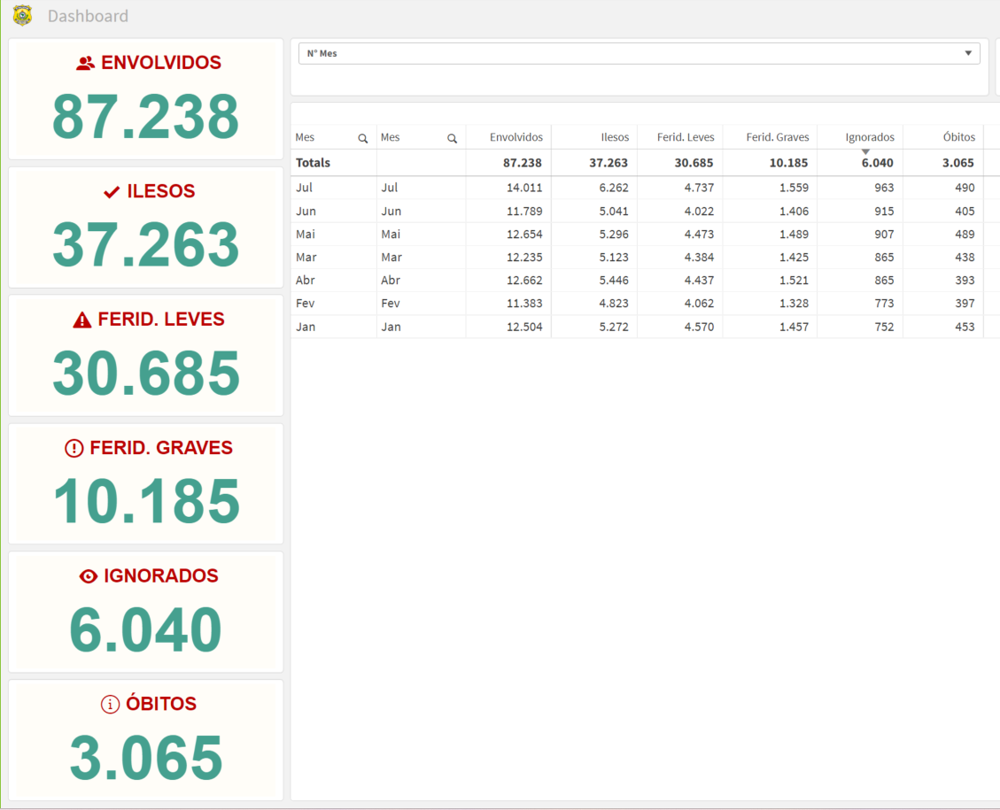
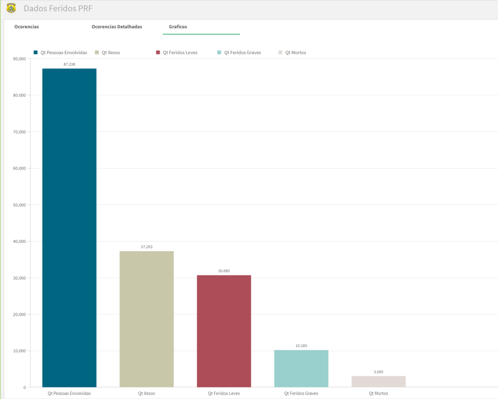

Meu nome é Airton Sander.
Meu RU é 3327981.
Tenho 25 Anos.
Moro em uma cidade pequena com cerca de 11 mil habitantes.
Trabalho atualmente há 5 anos em uma das maiores empresas de moveis do Brasil.
Meu cargo nessa empresa é de Analista de Dados, sou responsável em extrair, tratar, montar e apresentar os dados em gráficos, indicadores, tabelas, entre outras formas. Usamos a ferramenta Qlik para realizar esse trabalho.
Acampar com amigos em lugares altos, montar fogueiras, beber e jogar conversa fora.
Programar gosto muito de trazer algumas novidades pra empresa que trabalho.
Esporte favorito é voleibol.
Cartas um dos meus hobbies é jogar cartas.
Música gosto muito de trabalhar ouvindo música, me relaxa e consigo me concentrar melhor.
Idiomas atualmente me viro muito bem no português língua de origem, mas falo e entendo muito bem o alemão, e estou buscando o inglês atualmente.
Ensino Fundamental Completo.
Ensino Medio Completo.
Ensino Superior Completo em Tecnico em Agronegócio.
Buscando a formação de Análise e Desenvolvimento de Sistemas.
Alguns dos meus projetos com a ferramenta qlik, lembrando que são dados públicos.
 Email: airton-sander@hotmail.com.
Meu Instagram.
Meu Facebook.